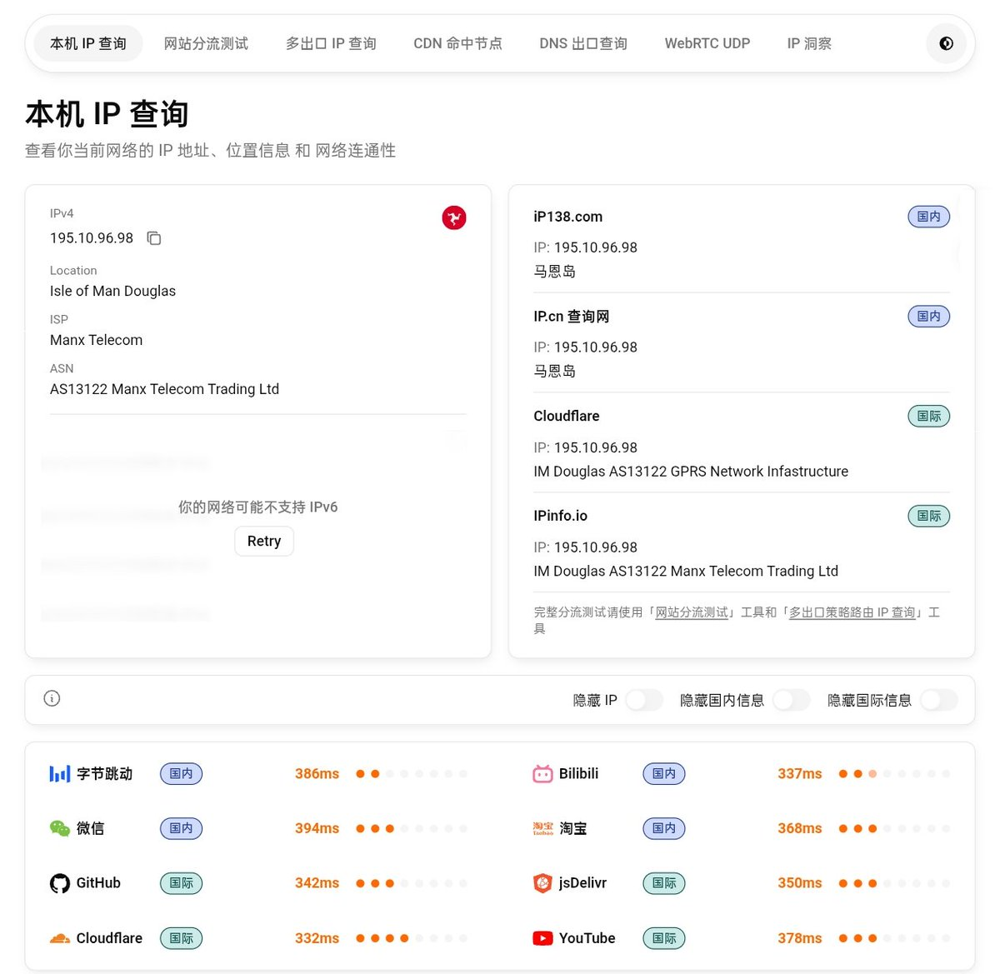
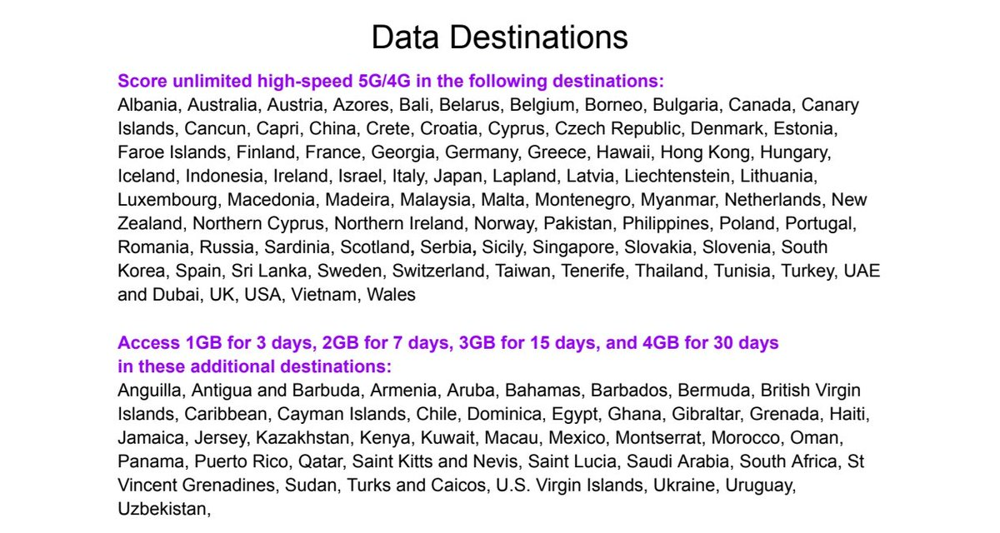
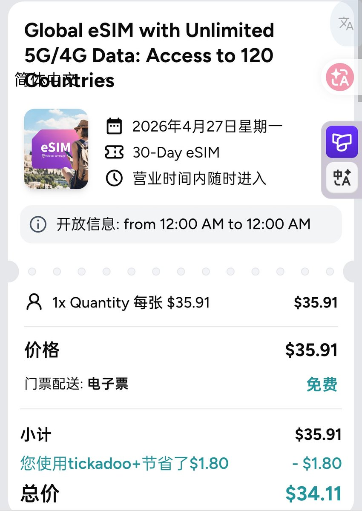
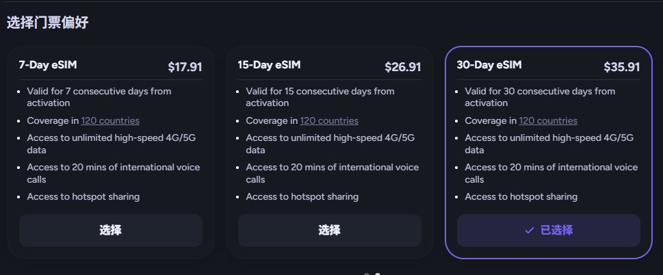
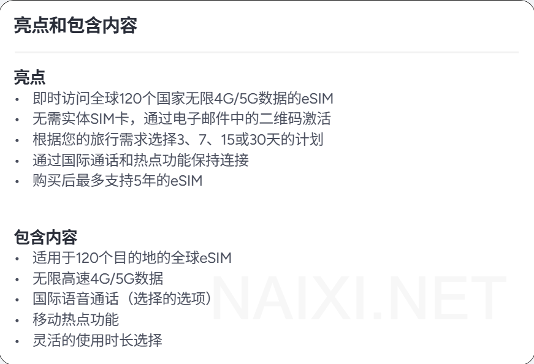
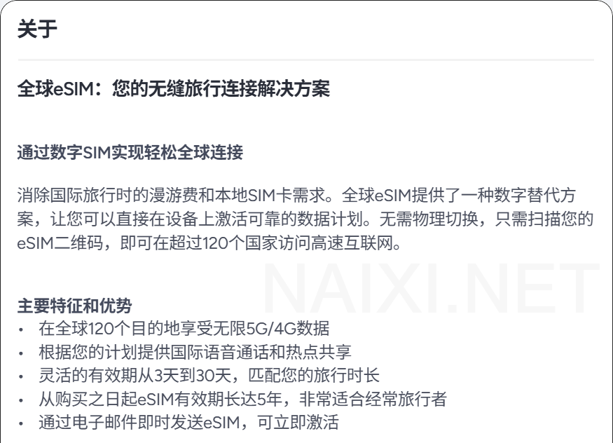

感谢论坛上的zl10038大佬的提供测评，卖票平台Tickadoo家的全球eSIM，购买套餐后有5%折扣优惠，第二次10%，第三次15%
第一次见这么小众的IP属地，运营商为马恩岛的曼岛电信（Manx Telecom），在中国内地漫游中国移动（CMCC），延迟330-370ms跟英国卡延迟差不多，地理上属于英属曼岛
不过这家eSIM测着测着就没信号了，手动选中国移动4G后又短暂恢复，支持的地区我放图3总之灵车来的，信号不是很稳而且会断联

第一次见这么小众的IP属地，运营商为马恩岛的曼岛电信（Manx Telecom），在中国内地漫游中国移动（CMCC），延迟330-370ms跟英国卡延迟差不多，地理上属于英属曼岛
不过这家eSIM测着测着就没信号了，手动选中国移动4G后又短暂恢复，支持的地区我放图3总之灵车来的，信号不是很稳而且会断联






有推友试过Tickadoo家的eSIM吗？最近在测这款 https://t.co/LIzSsKpVoV 120国无限量eSIM，最多可预定30天35.91刀（约246元），相当于一天8块钱，无限高速流量可热点
看着很灵，尤其是购买后未激活有效期最长5年，支持120个目的地，还可以额外选配通话功能
⚠不做推荐，仅提供一个信息，可免费取消！ https://t.co/x8J3Z1ykaT
看着很灵，尤其是购买后未激活有效期最长5年，支持120个目的地，还可以额外选配通话功能
⚠不做推荐，仅提供一个信息，可免费取消！ https://t.co/x8J3Z1ykaT